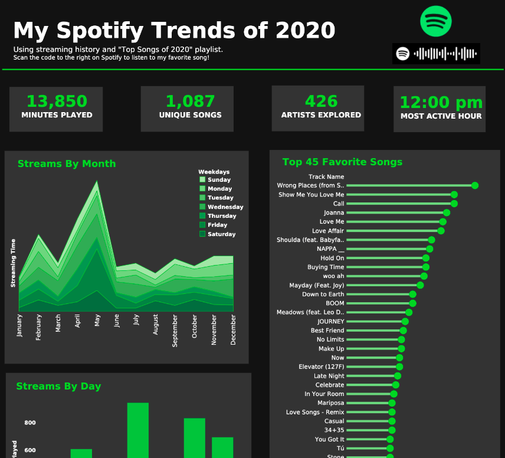

Spotify Optimal Musical Flow Playlist

- Collected,using Request Library, 100 tracks from "Top Songs 2020" playlist; each song's audio features; artist ids; and genre of each artist and exported to .csv to do feature analysis.
- Wrangled streaming history dataset and audio feature dataset using NumPy and Pandas.
- Explored over 7,000 rows of streaming history to see what days and what time of day I stream the most and to see how Spotify orders their "Top Songs 2020" playlist.
- Analyzed audio features of "Top Songs 2020" to see distribution and correlation of each to subsequently apply to our criteria of reodering songs.
- Coded a Python script to automate curated songs from a .csv file into a Spotify playlist.
- Presented analytical findings on a dashboard using Tableau.
This Project's Github Respository